Qué va a encontrar
Toque o haga clic en un título para ir directo a esa parte.
- 1. Qué es el conocimiento de la empresa
- 2. Dónde está: Administración → Conocimiento de la empresa
- 3. Subir documentos
- 4. Quién puede ver cada documento
- 5. Lectura con IA para PDF escaneados
- 6. Probar qué encuentra SAVI
- 7. Preguntarle a SAVI y leer la cita
- 8. Sitios web
- 9. Buenas prácticas
- 10. Resolución de problemas
1. Qué es el conocimiento de la empresa
Además de los datos del ERP, SAVI puede responder con información que usted le cargue: políticas internas, procedimientos, manuales, listas de precios publicadas, fichas técnicas o el sitio web de la empresa. A ese material lo llamamos conocimiento.
Hay dos tipos de fuentes:
- Documentos: archivos PDF (con texto o escaneados), TXT o Markdown que sube desde su equipo.
- Sitios web: direcciones de internet cuyo texto público SAVI lee y mantiene al día.
Cuando alguien hace una pregunta, SAVI busca primero en este material y, si encuentra algo útil, lo usa y cita la fuente: el nombre del documento, la página y, si corresponde, un enlace para abrirlo.
Todo lo que cargue puede aparecer en respuestas. Cargue solo material que quiera que SAVI use, y elija bien quién puede verlo (sección 4). Los fragmentos que sirven para responder se envían al proveedor de IA activo, igual que los datos del ERP.
2. Dónde está: Administración → Conocimiento de la empresa
- Entre a SAVI con un usuario administrador.
- Toque Administración en el menú de la izquierda.
- Elija Conocimiento de la empresa.
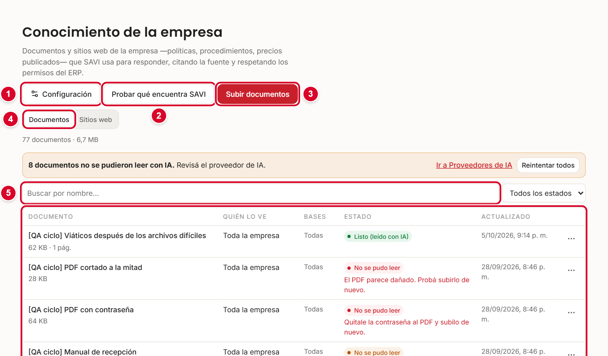
- 1Configuración: lectura con IA y límite de subidas.
- 2Probar qué encuentra SAVI: simula una pregunta para ver qué fragmentos se usarían.
- 3Subir documentos: carga uno o varios archivos.
- 4Pestañas Documentos y Sitios web.
- 5Buscador por nombre y filtro por estado (Listos, En proceso, Con problemas).
- 6Tabla de documentos, con quién los ve, a qué bases aplican y su estado.
Arriba de la tabla ve cuántos documentos hay y cuánto espacio ocupan. Si algún PDF no se pudo leer con IA, aparece un aviso con los botones Ir a Proveedores de IA y Reintentar todos.
3. Subir documentos
Qué se puede subir
| Tipo | Detalle |
|---|---|
| Con texto digital o escaneados (imágenes de hojas). Los escaneados se leen con IA (sección 5). | |
| TXT | Texto simple. |
| Markdown (.md) | Texto con formato simple. |
El tamaño máximo es de 60 MB por archivo. Los demás tipos (Word, Excel, imágenes sueltas) no se aceptan: conviértalos antes a PDF.
Paso a paso
- Toque Subir documentos.
- Arrastre los archivos hasta el recuadro 1, o toque Elegir archivos. Puede elegir varios a la vez.
- Revise el título 2 de cada uno. SAVI propone el nombre del archivo: cámbielo por uno claro, porque ese título se muestra en las citas.
- Mire la línea de lectura 3. Dice cuántas páginas tiene el PDF y si se leerá con IA, con una estimación del costo.
- Elija quién puede consultar el documento 4 y en qué bases aplica 5 (sección 4).
- Lea el aviso de privacidad 6. Con Ver más se despliega completo.
- Toque Subir 7. El número entre paréntesis es la cantidad de archivos.
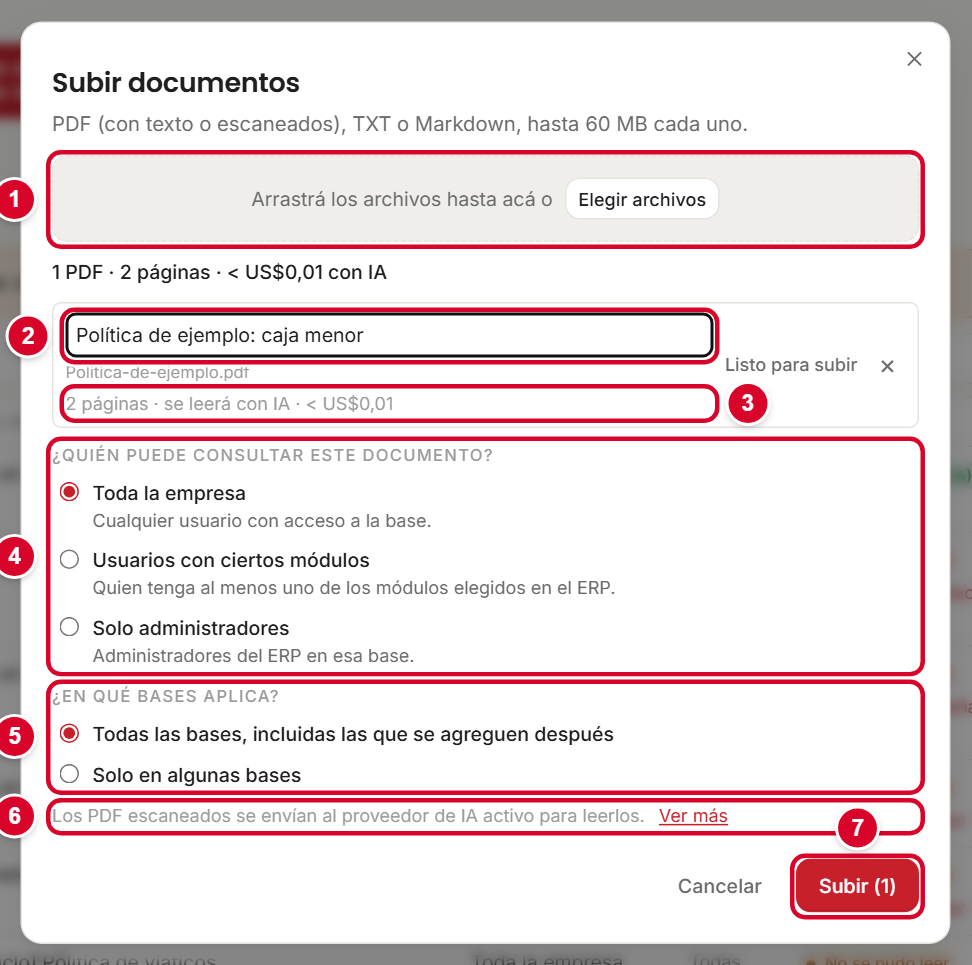
Cada archivo muestra su propio resultado: Subido (se está procesando), Duplicado ("Ya existe: …") o Rechazado (por ejemplo, "Solo se aceptan PDF, TXT y Markdown." o "Supera el límite de 60 MB."). Un archivo con problema no frena a los demás.
Estados de un documento
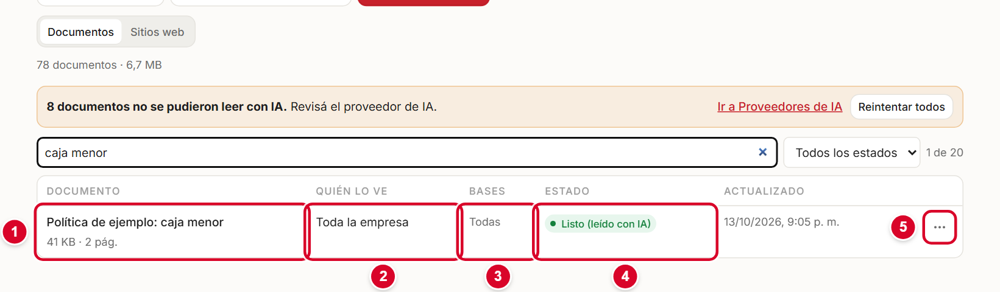
| Estado | Qué significa | Qué hacer |
|---|---|---|
| En cola / Procesando… | SAVI está leyendo el archivo y preparándolo para buscar. Si lo lee con IA, ve "Leyendo con IA: página X de Y". | Esperar. Puede tardar de unos segundos a algunos minutos. |
| Listo | Se leyó el texto digital del archivo. Ya se puede usar. | Nada. |
| Listo (leído con IA) | Se leyó con IA (por ejemplo, un escaneo). Ya se puede usar. | Nada. |
| No se pudo leer | No se pudo extraer el texto. Debajo del estado hay una pista con la causa. | Ver la tabla siguiente. |
| Pista bajo "No se pudo leer" | Qué hacer |
|---|---|
| El PDF parece dañado. Pruebe subirlo de nuevo. | Vuelva a generar el PDF desde el original y súbalo otra vez. |
| Quítele la contraseña al PDF y súbalo de nuevo. | Abra el PDF, guárdelo sin contraseña y súbalo. |
| Revise el proveedor de IA. | Falla de clave, saldo o cuota del proveedor (manual 02). Cuando lo resuelve, use Reintentar todos o Leer con IA en el documento. |
| La IA no pudo leer las páginas. Pruebe con un escaneo más nítido. | Escanee de nuevo con más resolución y buen contraste. |
4. Quién puede ver cada documento
No todo el material es para todas las personas. Al subir, define dos cosas:
| Pregunta | Opciones |
|---|---|
| ¿Quién puede consultar este documento? | Toda la empresa: cualquier usuario con acceso a la base. Usuarios con ciertos módulos: quien tenga al menos uno de los módulos elegidos en el ERP (por ejemplo, solo Inventario). Solo administradores: administradores del ERP en esa base. |
| ¿En qué bases aplica? | Todas las bases, incluidas las que se agreguen después. Solo en algunas bases: elija cuáles (útil cuando un documento es de un solo cliente). |
Los permisos se pueden cambiar después con Editar en el menú de la fila. Si el cambio le quita el acceso a alguien que hoy lo tiene, SAVI le pide confirmar: las citas anteriores de esas personas pasan a mostrarse como no disponibles.
Un documento reservado a administradores o a ciertos módulos no se usa para responder a quienes no tienen ese permiso. Un acta de directorio debería subirse como Solo administradores.
Acciones sobre un documento
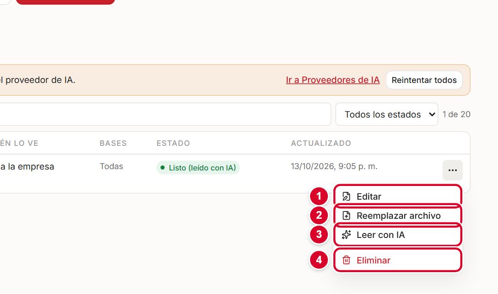
| Acción | Para qué sirve |
|---|---|
| Editar 1 | Cambiar el título y los permisos. |
| Reemplazar archivo 2 | Subir una versión nueva del mismo documento (por ejemplo, la política actualizada). El documento conserva su lugar y pasa a "versión 2". |
| Reprocesar | Aparece cuando no se pudo leer. Vuelve a intentar con el mismo archivo. |
| Leer con IA 3 | Fuerza la lectura con IA de un PDF ya cargado (útil si se subió antes de activar la lectura con IA, o para un escaneo que se leyó mal). |
| Eliminar 4 | Borra el archivo. Deja de usarse de inmediato y pide confirmación. |
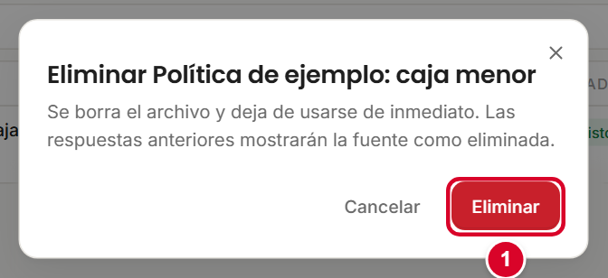
5. Lectura con IA para PDF escaneados
Un PDF "con texto" se lee directamente. Un PDF escaneado (una foto de una hoja) no tiene texto: hace falta que una IA lo "lea" mirando la imagen. Eso es la lectura con IA. También sirve para tablas, planos y fichas técnicas.
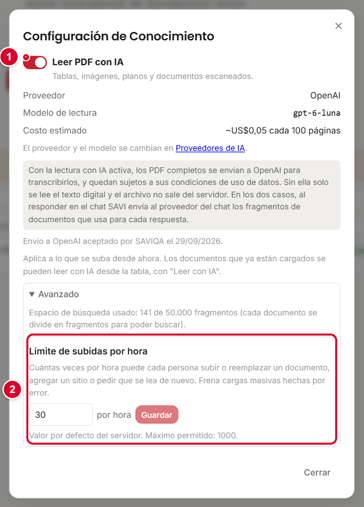
- El interruptor Leer PDF con IA la activa o desactiva. Muestra qué proveedor y modelo de lectura se usan y un costo estimado cada 100 páginas.
- El proveedor y el modelo se cambian en Proveedores de IA (manual 02).
- Al subir, cada PDF muestra cuántas páginas tiene y una estimación de costo, antes de enviarlo.
Con la lectura con IA activa, los PDF completos se envían al proveedor de IA para transcribirlos, y quedan sujetos a sus condiciones de uso de datos. Sin ella solo se lee el texto digital y el archivo no sale del servidor.
La primera vez, SAVI pide que un administrador acepte el envío al proveedor. Queda registrado quién lo aceptó y cuándo. Si cambia de proveedor, hay que aceptarlo de nuevo.
Si un documento tiene información sensible y alcanza con su texto digital, deje la lectura con IA desactivada antes de subirlo, o súbalo en formato TXT.
Límite de subidas por hora
En Configuración → Avanzado está el Límite de subidas por hora: cuántas veces por hora puede cada persona subir o reemplazar un documento, agregar un sitio o pedir que se lea de nuevo. Sirve para frenar cargas masivas hechas por error. El valor por defecto es 30 por hora (máximo permitido: 1000). Para cambiarlo, escriba el número y toque Guardar. En la misma sección ve cuánto del espacio de búsqueda está usado. Si el espacio se llena, SAVI avisa "La instalación alcanzó el límite de fragmentos" y hay que eliminar documentos que ya no se usan. Si alguien alcanza el límite por hora, tiene que esperar o un administrador debe aumentarlo.
6. Probar qué encuentra SAVI
Antes de contárselo a todos, compruebe que SAVI encuentra lo que cargó.
- Toque Probar qué encuentra SAVI.
- En Consulta 1 escriba una pregunta como la haría un usuario.
- En Cliente 2 elija la base. Opcionalmente, en Probar como usuario, escriba el código de un usuario del ERP para ver qué encontraría esa persona según sus permisos.
- Toque Probar 3. Debajo, Encontraría lista los fragmentos, con el documento y las páginas de donde salen.
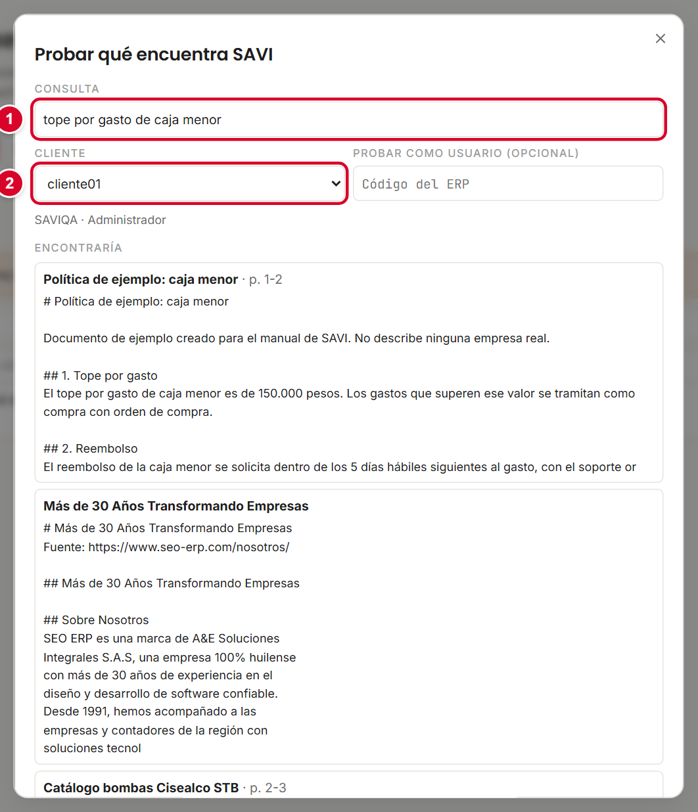
Si su documento no aparece, revise que esté en estado Listo, que los permisos incluyan a ese usuario y a esa base, y que la pregunta use palabras parecidas a las del documento.
7. Preguntarle a SAVI y leer la cita
Los usuarios no tienen que hacer nada especial: preguntan con naturalidad. Si el documento contiene la respuesta, SAVI la usa.
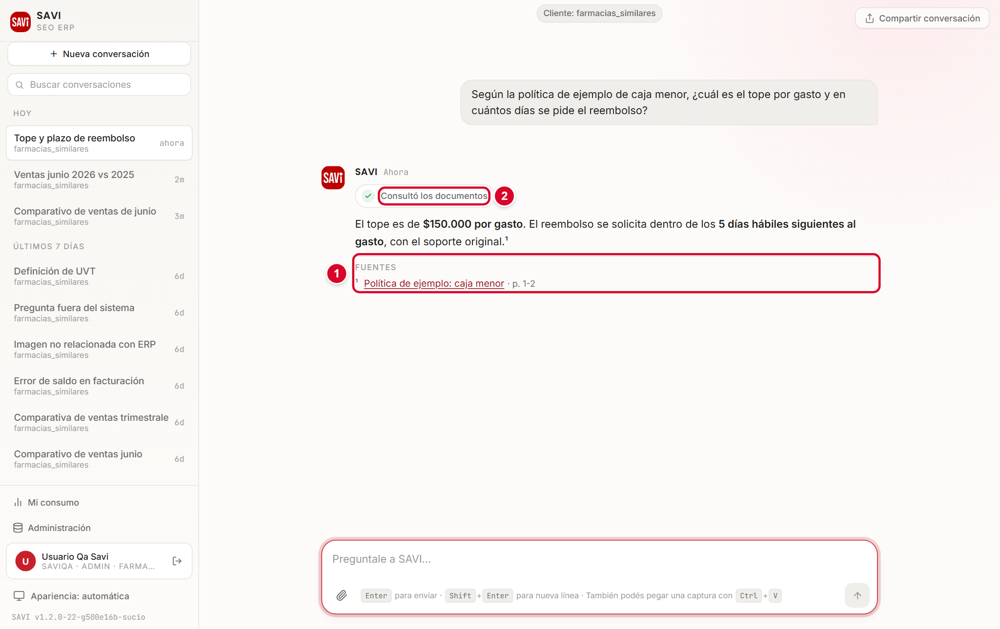
- La etiqueta Consultó los documentos indica que la respuesta usó su material.
- Los números pequeños (¹) marcan la frase que se apoya en una fuente.
- En Fuentes aparece el título del documento y las páginas usadas (por ejemplo, "p. 1-2").
- Tocar la fuente abre el documento (o la página web) para comprobar el dato.
Para que SAVI encuentre mejor, los usuarios deberían preguntar con las palabras del documento: "¿Cuál es el tope de caja menor?" funciona mejor que "¿Cuánto puedo gastar?".
8. Sitios web
SAVI también puede leer el texto público de un sitio web y usarlo para responder, citando el enlace. Es útil para el sitio institucional, catálogos o páginas de políticas y de precios publicados.
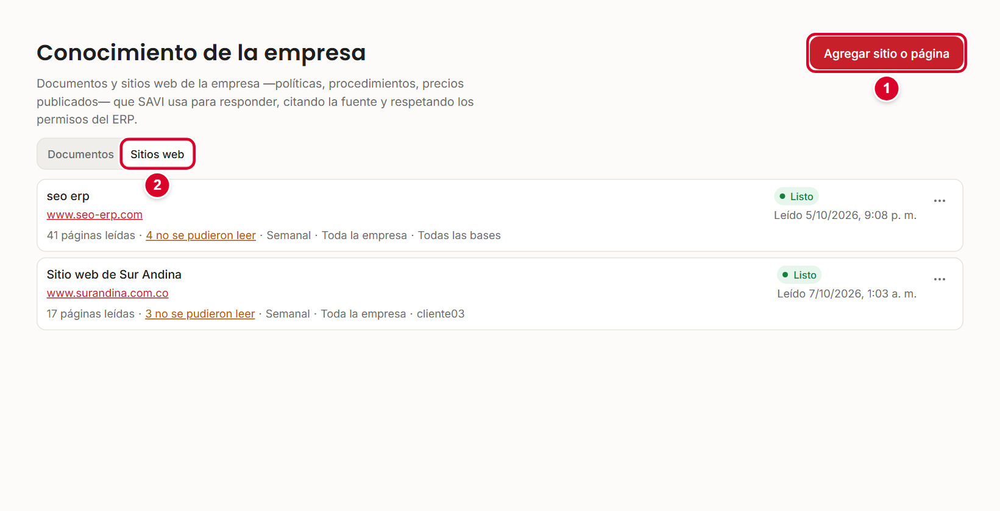
Agregar un sitio paso a paso
- Entre a la pestaña Sitios web y toque Agregar sitio o página.
- En Dirección 1 escriba la dirección, por ejemplo
www.empresa.com. - En Qué leer 2 elija:
• Todo el sitio: la dirección y las páginas del mismo sitio. Puede limitar el Máximo de páginas (por defecto 200).
• Solo esta página: útil para una página de precios o de políticas. - Toque Revisar 3. SAVI busca las páginas y lee la primera; puede tardar unos segundos. Todavía no se guardó nada.
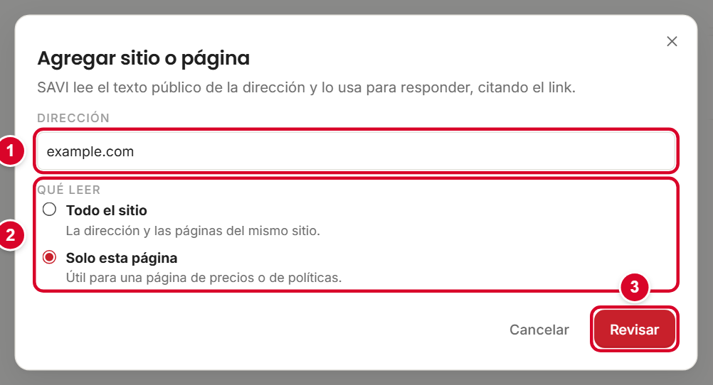
- Mire la vista previa 1. Dice cuántas páginas se leerán y si las encontró en el mapa del sitio o siguiendo los enlaces. En "Todo el sitio" aparece la lista de Secciones: desmarque las que no aportan, como el blog o las etiquetas. Texto leído de la primera página le deja ver el texto.
- Revise el Nombre, Volver a leer (Solo manual, Diario o Semanal) y los permisos (iguales a los de los documentos).
- Toque Agregar 2. Aparece el aviso "… se está leyendo".
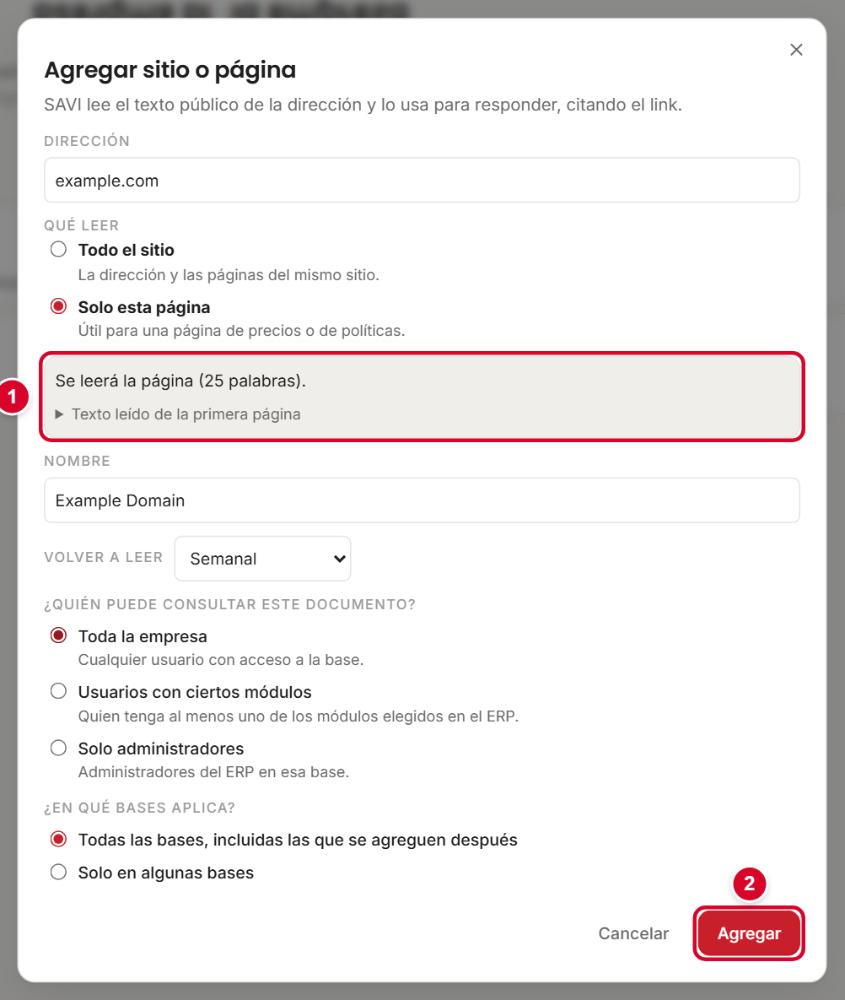
Estados y acciones
| Estado | Significado |
|---|---|
| En cola / Leyendo el sitio… | SAVI está recorriendo el sitio. |
| Listo | Se leyó. Ve cuántas páginas se leyeron y cuántas no ("41 páginas leídas · 4 no se pudieron leer") y la fecha de la última lectura. |
| No se pudo leer | No se pudo acceder al sitio. Revise la dirección y pruebe Leer ahora. |
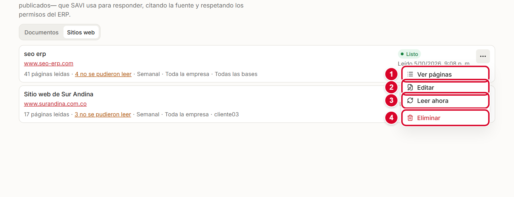
| Acción | Para qué sirve |
|---|---|
| Ver páginas | Muestra la lista de páginas leídas con su estado: Leída, Sin cambios, No se pudo leer o Ya no existe. Permite filtrar entre Todas, Leídas y Con problemas, y ver cuándo es la próxima lectura. |
| Editar | Cambiar el nombre, cada cuánto se vuelve a leer y los permisos. |
| Leer ahora | Actualiza el sitio ya, sin esperar la próxima lectura programada. |
| Eliminar | Quita el sitio y deja de usarse. Pide confirmación. |
- SAVI lee el texto público. No entra a páginas que piden usuario y contraseña.
- Los sitios que arman su contenido con JavaScript (el texto aparece recién después de cargar) pueden leerse incompletos. Si la vista previa muestra poco texto, pruebe con una página específica o cargue el contenido como documento PDF.
- Las páginas sin texto útil o repetidas se omiten: por eso a veces hay algunas "que no se pudieron leer".
- Los enlaces de las fuentes aparecen en las respuestas, así que los usuarios llegan a la página original.
9. Buenas prácticas
- Ponga nombres claros. "Política de viáticos 2026" es mejor que "scan0045". Ese título es el que ven los usuarios en las fuentes.
- Un tema por documento. Los documentos cortos y enfocados se encuentran mejor que uno gigante con todo mezclado.
- Evite duplicados. Si hay dos versiones de lo mismo, SAVI puede citar la vieja. Use Reemplazar archivo para actualizar.
- Manténgalos al día. Revise periódicamente qué documentos ya no rigen y elimínelos o reemplácelos.
- Escanee bien. Buena luz, hoja derecha y resolución suficiente. Un escaneo nítido ahorra problemas.
- Revise los permisos antes de subir: lo que es solo de directivos, solo para administradores.
- Pruebe siempre con Probar qué encuentra SAVI después de cargar algo importante.
10. Resolución de problemas
| Problema | Causa probable | Qué hacer |
|---|---|---|
| No me deja subir: "Solo se aceptan PDF, TXT y Markdown." | El archivo es de otro tipo (Word, Excel, imagen). | Conviértalo a PDF. |
| "Supera el límite de 60 MB." | El archivo es muy pesado. | Comprímalo o divídalo en partes. |
| "Duplicado — Ya existe: …" | Ya se subió el mismo contenido. | No hace falta subirlo de nuevo. Para actualizarlo, use Reemplazar archivo. |
| El documento quedó en "No se pudo leer" | Archivo dañado, con contraseña, escaneo ilegible o falla del proveedor de IA. | Siga la pista que aparece debajo del estado (sección 3). |
| Muchos documentos con "Revise el proveedor de IA" | El proveedor activo no responde: clave, saldo o cuota. | Resuélvalo en Proveedores de IA (manual 02) y toque Reintentar todos. |
| Suba el documento, pero SAVI no lo usa | No está en estado Listo, o el usuario no tiene permiso, o la pregunta no se parece al texto. | Use Probar qué encuentra SAVI y revise estado y permisos. |
| Una persona no ve las citas de un documento | El documento está reservado a ciertos módulos o a administradores. | Revise Quién lo ve y Bases con Editar. |
| Un sitio quedó con pocas páginas leídas | El sitio carga el contenido con JavaScript o bloquea la lectura. | Pruebe "Solo esta página" con páginas clave o cargue su contenido como PDF. |